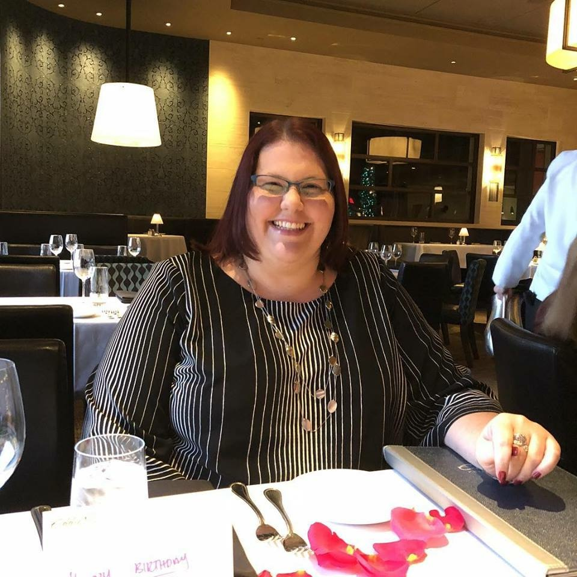

About Me
I grew up in the Orlando area, but originally from a small town in northern Illinois. I am the youngest of four children. I love spending time with my family, especially my five nieces and nephews. I enjoy reading, traveling and doing crafts.
I graduated from University of Central Florida in 2008 with a bachelor’s in science for Health Information Management. I also completed my certification as a Registered Health Information Manager (RHIA) through America Health Information Management Association (AHIMA). I also recently completed my Certified Revenue Cycle Representative certification through Healthcare Financial Management Association (HFMA). I have worked at Orlando Health for sixteen years, and thirteen of those in Revenue Integrity. I am currently an Assistant Manager of Charge Management and Education.
The foundation stones for a balanced success are honesty, character, integrity, faith, love and loyalty. ~Zig Ziglar~